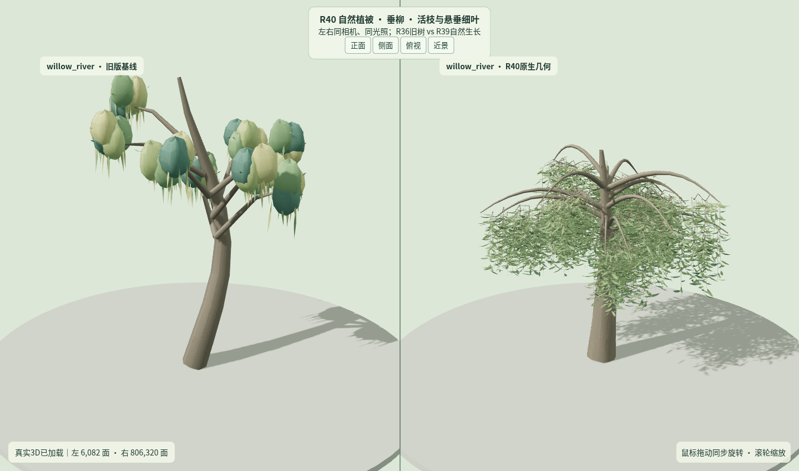
柳树与河岸乔木
树冠 / Willow


灌木与野花
林下 / Shrub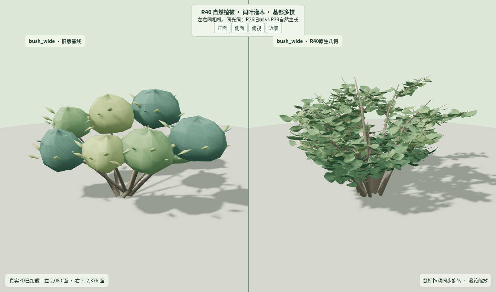


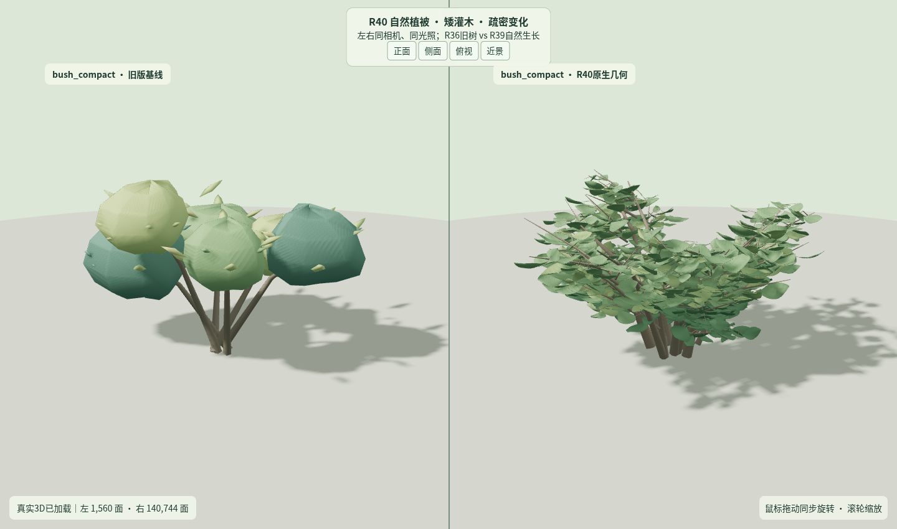


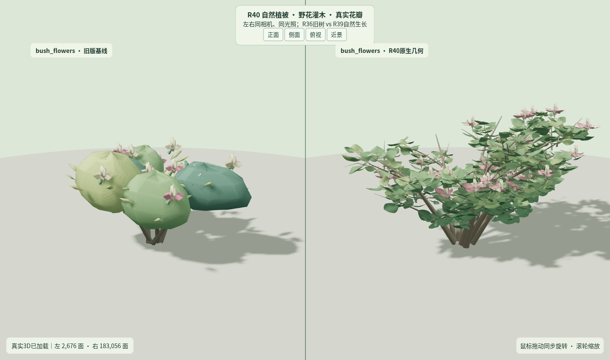


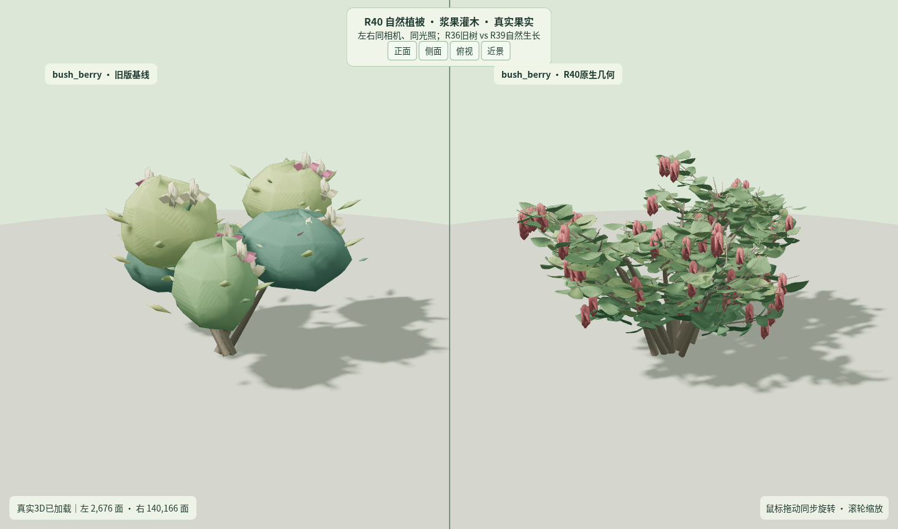


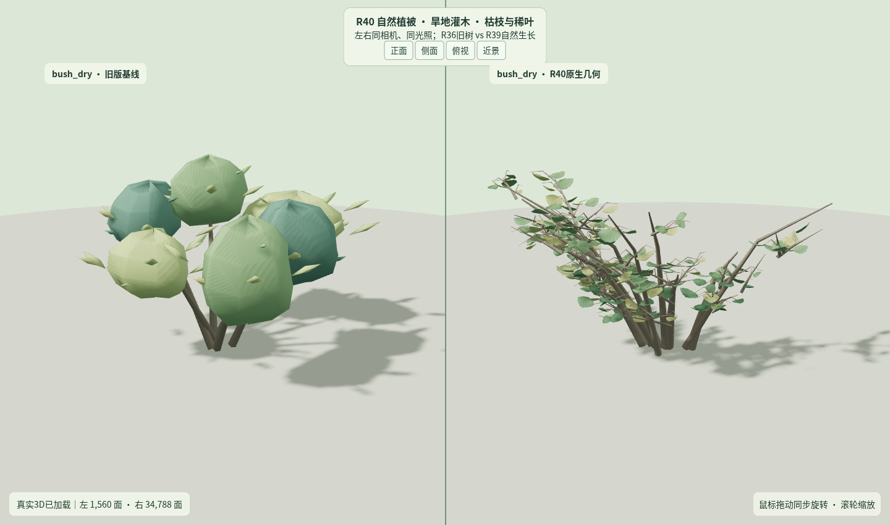


蕨类、草丛与湿地
林下 / Ground flora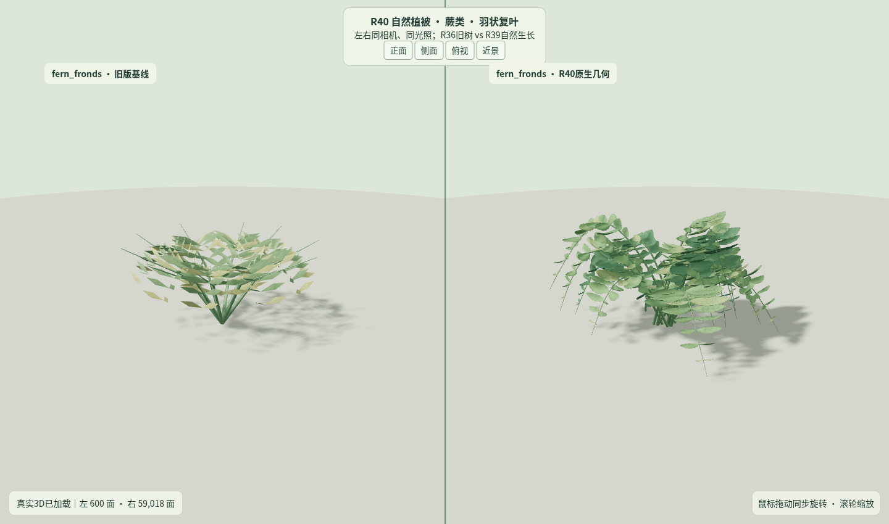


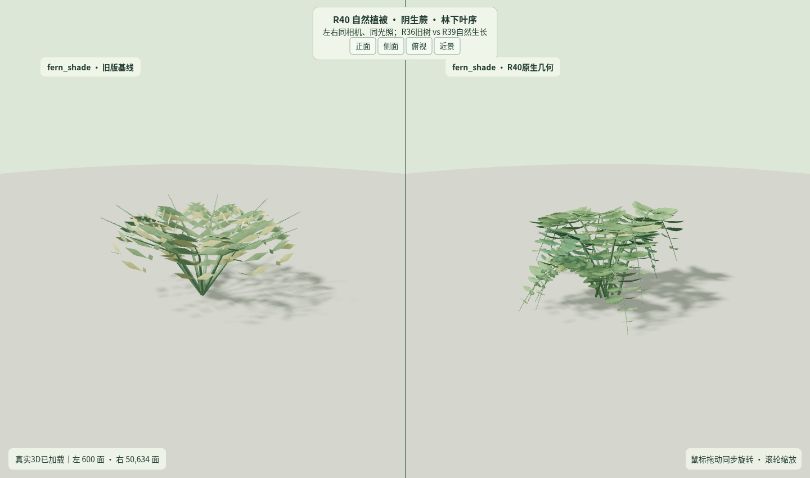


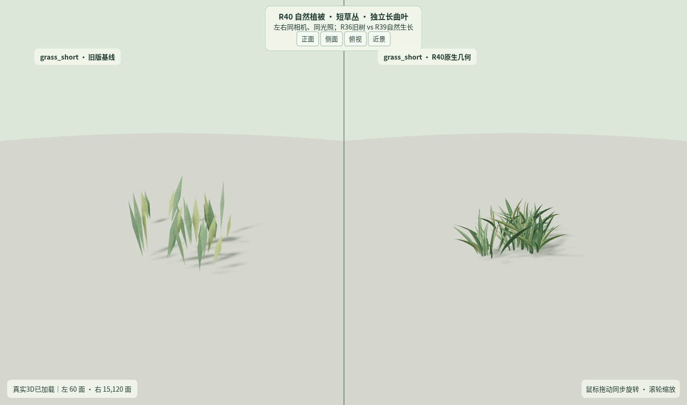


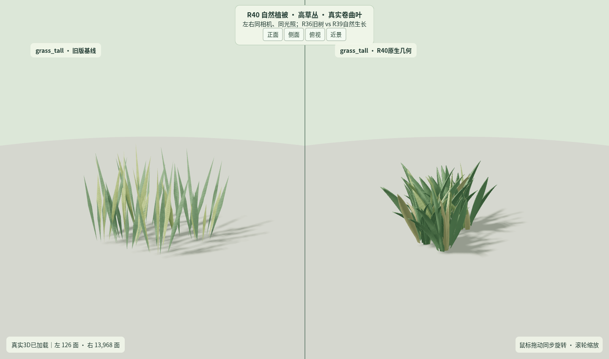


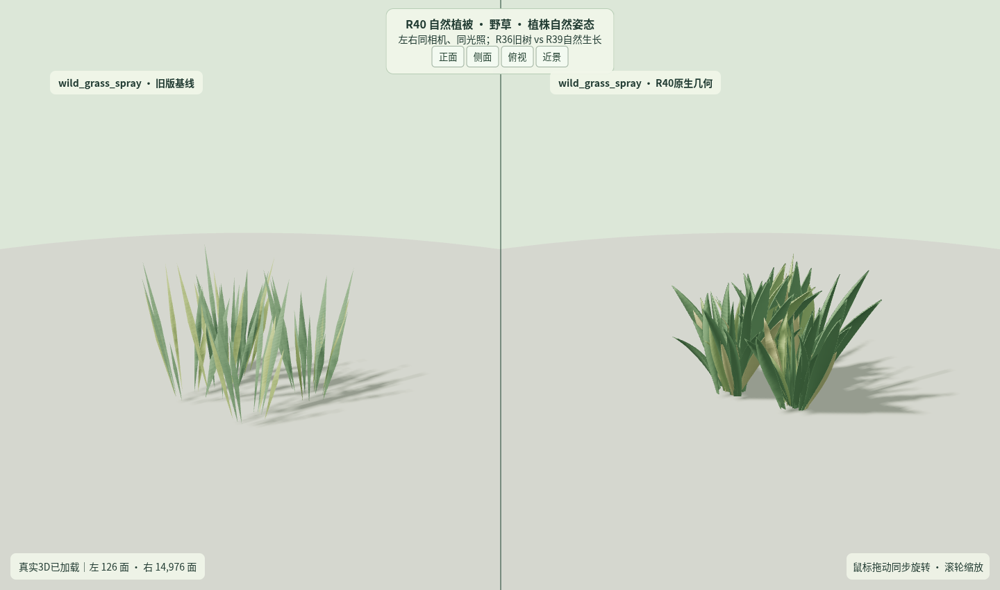


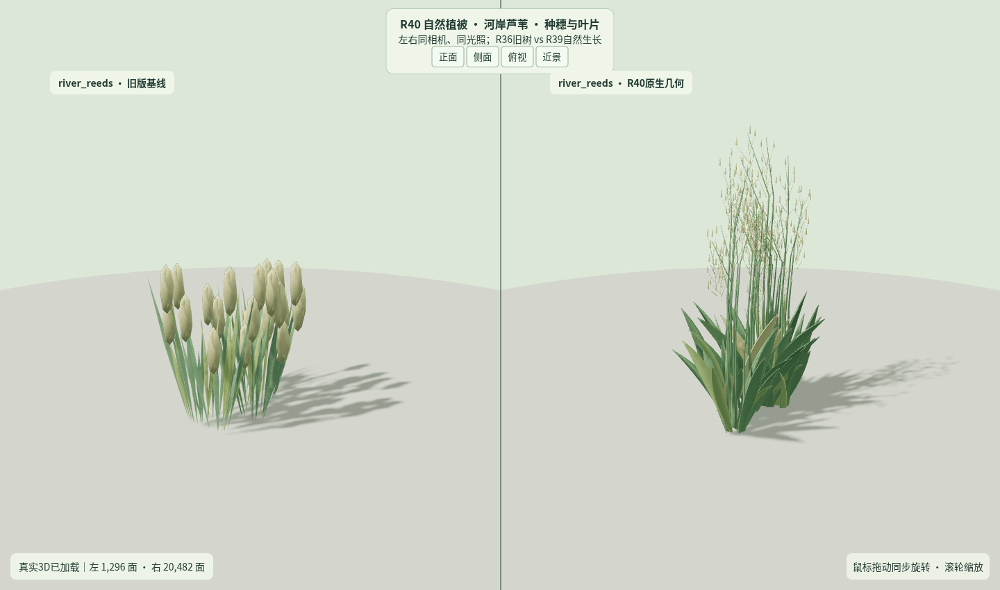


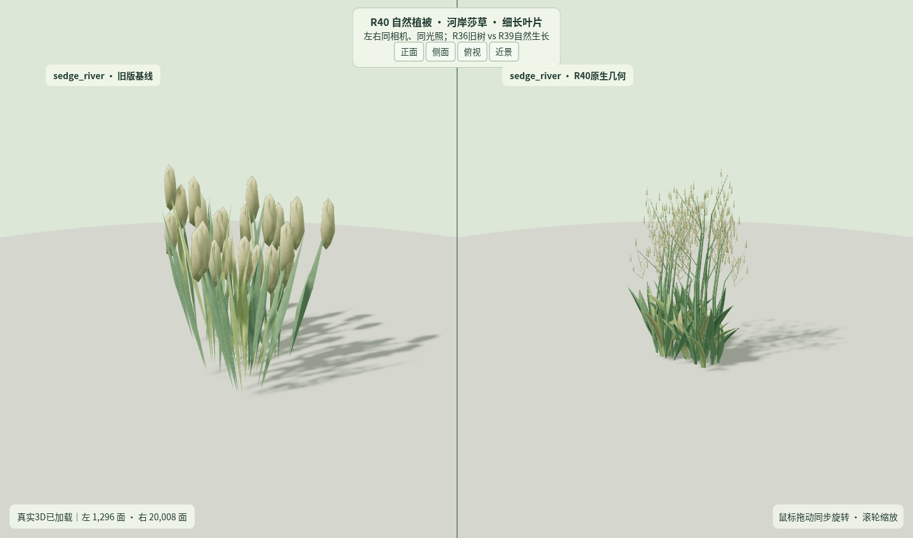


质量边界：这是没有图片贴图和树叶球团的高精度原型。14组已通过真实浏览器加载、旋转和缩放测试，但不等于都已完成最终艺术审定。柳树树冠形态、灌木的自然群落分布、植物与地面及河水的接触关系，仍需要回到完整森林中验证。R38／R39及正式森林不受覆盖。